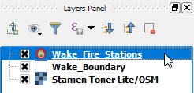

This lesson's project contains a single layer named points.
On the Layers Panel, click on the layer's name to make it the current active layer. The layer's item will be highlighted.

Once you have finished, click Next step.